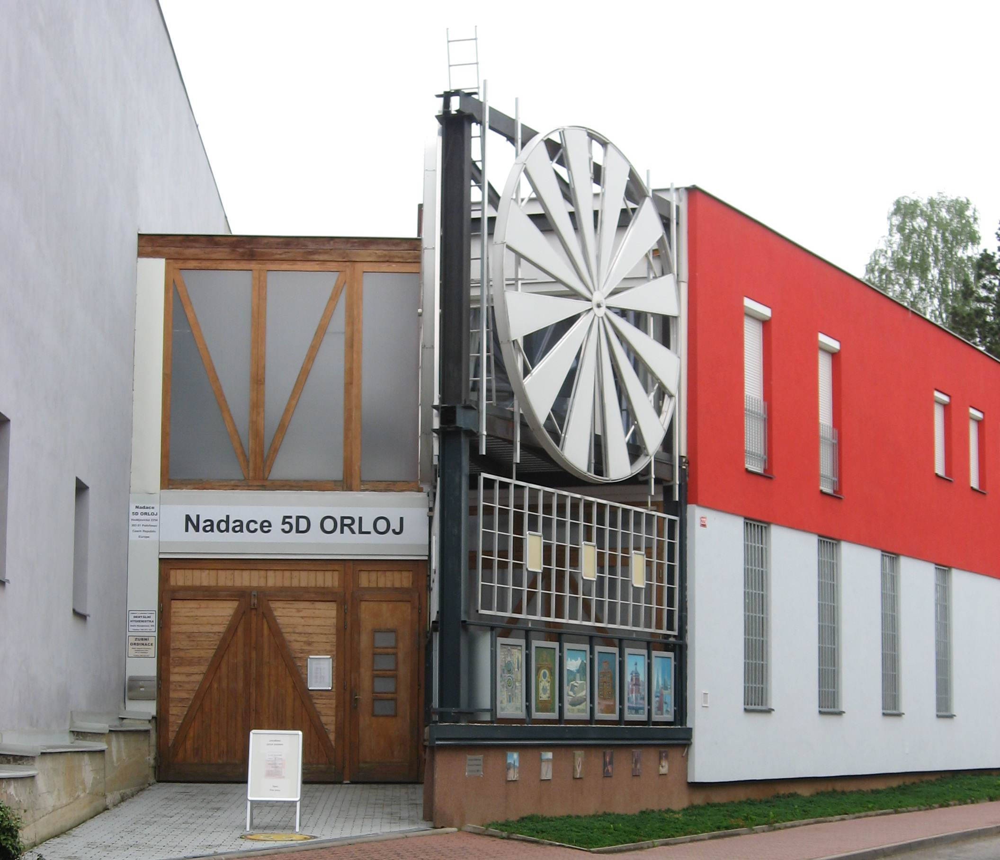
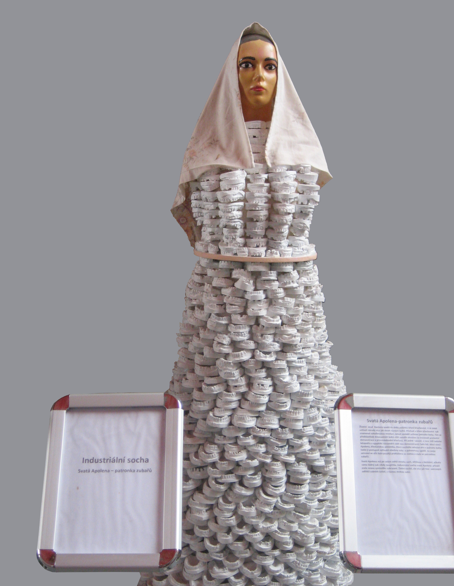
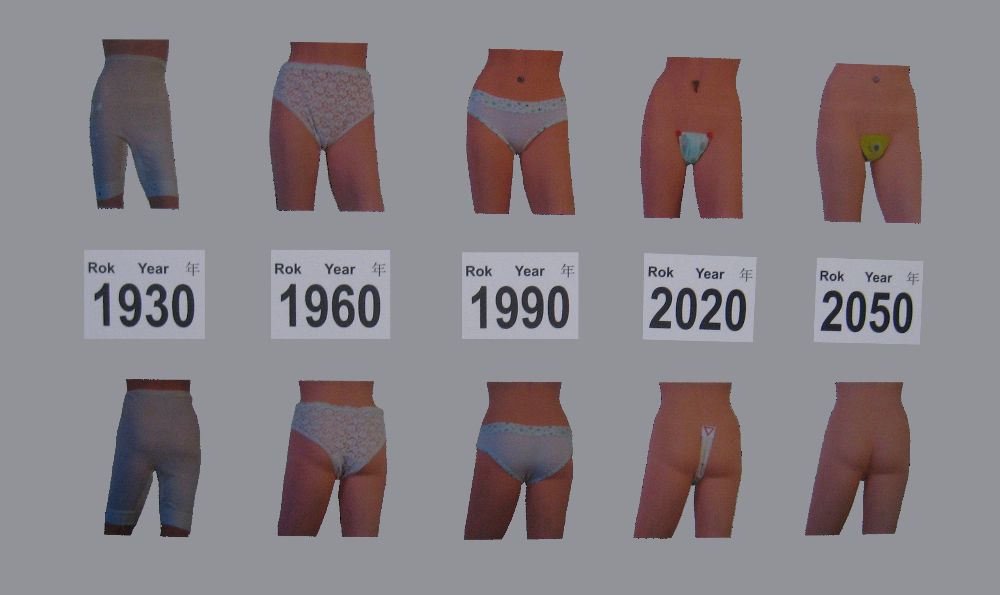
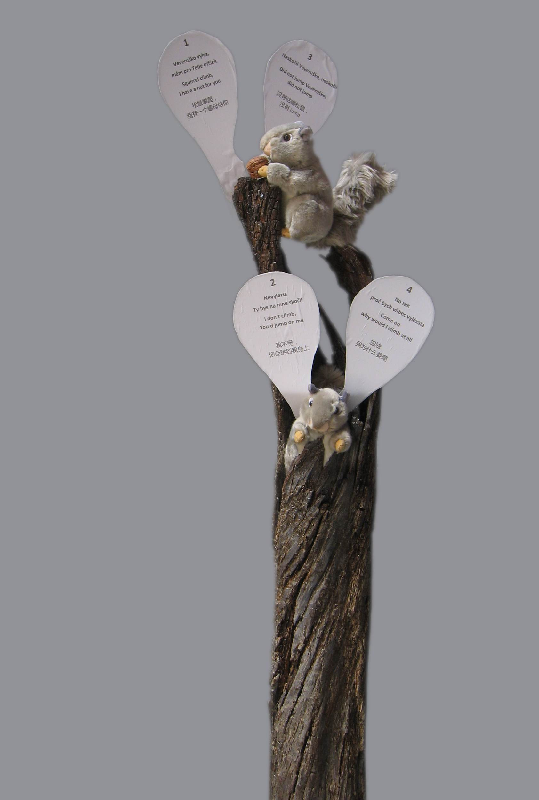

OTVÍRACÍ DOBA Po – Pa 7,00 - 12,00
VÝSTAVA NENÍ VHODNÁ PRO DĚTI
VSTUP ZDARMA

Muzeum industriálního umění si klade za cíl vytvářet a shromažďovat
umělecká díla zachycující vývoj lidské společnosti počínaje designem až po
nový umělecký směr 3D komiks.
V muzeu se tak nachází nejstarší exponát z kategorie designu, z roku 1820,
pomůcky pro léčení vaginismu, stejně tak jako exponáty ze současnosti.
Vůbec nejstarším exponátem je umělecky zpracované torzo přírodního samorostu, hraničního
stromu, z roku 1653, vysokého cca 2,5m, pocházejícího z „Vlčiny“.
Nejrozměrnější jsou sochy v životní velikosti, jako například sousoší „Světová
finanční krize 2008“, „Vojáci OSN při bojovém nasazení“, „Ohrožení
světového míru“. Naopak nejmenší jsou umělecké artefakty – těžítka na stůl,
jako například „Milenium 2000“, „Václav Havel“, „Karl Marx“ a další.
Samostatnou skupinu tvoří rozměrné dvojportréty, jako jsou „Busch –
Gorbačov, nebo „Klaus – Mečiar“.
Z knižní tvorby jsou to dvojjazyčné, česko - anglické umělecky provedené
knihy Nezval – EDISON, Osers – PRAHA a další.
Svatá Apolena-patronka zubařů

Životní osud Apoleny spadá do
doby počátků
šíření křesťanství. V té době
uctívali národy více jak deset různých bohů. Příchod a šíření křesťanství tak
znamenal náboženskou revoluci, neboť zaváděl uctívání jednoho boha. Tím se
představitelé dosavadních bohů cítili natolik ohroženi že iniciovali protestní
demonstrace a pronásledování křesťanů. Při jedné takové, v roce 249 našeho
letopočtu v egyptské Alexandrii zabil dav demonstrantů řadu lidí. Mezi nimi i
Apolenu, křesťanskou aktivistku, která nechtěla odvolat víru v jednoho boha,
takže ji postupně vytloukli všechny zuby a polomrtvou upálili. Za svoje
setrvání ve víře byla později prohlášena za svatou a stala se patronkou
zubařů.
Svatá Apolena má po celém světě mnoho soch, většinou s kleštěmi, ačkoliv
sama žádný zub nikdy nevytrhla. Industriální socha svaté Apoleny přináší
zcela novou symboliku zobrazení. Žádné kleště, ale více jak tisíc sádrových
odlitků zubních čelistí, s různou ztrátou zubů.
Umělecká předpověď globálního oteplování do roku 2050

3D komiks duplex Dialog veverek

Když pražský biskup Pelgrim z Vartenberka (česky Pelhřim) , při své cestě do Říma dorazil až do zdejších krajů, zastavil se u studánky Belky, kde byl natolik okouzlen krásou krajiny, že zde založil město, které nazval svým jménem – Pelhřimov.
Když papež Honorius III. roku 1225 povolal biskupa Pelhřima ke slyšení do Říma a ten utrmácen a unaven dorazil do zdejších krajů, otevřela se před ním scenérie krásné krajiny a průzračné vody, u které klečela pradlena a máchala prádlo. Příroda a klečící pradlena ho natolik uchvátili, že kázal zastavit a požádal pradlenu, zda by mu vyprala propocené a zaprášené biskupské roucho. Pradlena byla zkušená a znalá žena, takže biskupovi nejen vyprala prádlo, ale také ho láskyplně celého omyla a znavené údy mu ošetřila tak něžným způsobem, že na to v ani v Římě, městě zábavy a neřestí, nedokázal zapomenout. Po návratu domů vyslal proto v roce 1225 poselstvo, aby v místě jeho nezapomenutelné zastávky založili a vybudovali nové osídlení. Ona pradlena porodila celkem 16 dětí, z nich jedeno, chlapec, byl více než náhodně podobný biskupovi Pelhřimovi. Když dospěl, stal se prvním rychtářem obce , dnes nazývané město Pelhřimov.
Kouzlo obou legend spočívá v tom, že ani jednu z nich nelze věrohodně doložit, takže záleží jen a jen na vás, kterou z nich si vyberete. Já už jsem si vybral.
Jiří Dvořák
Hodějovucká 2254
Pelhřimov
393 01
Husinecká 903/10
130 00 Praha 3
Czech Republic – Europe